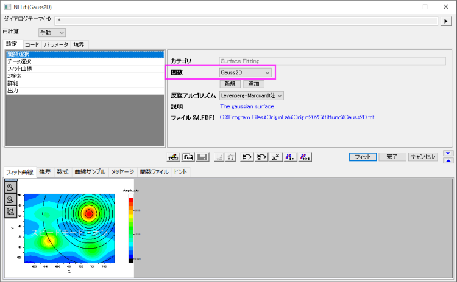
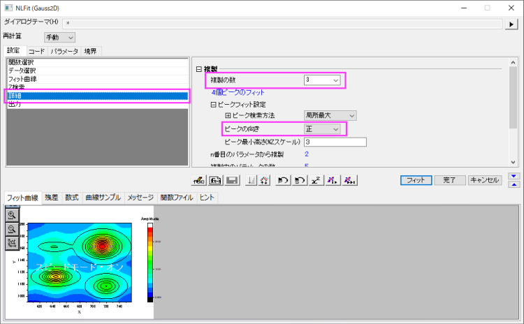
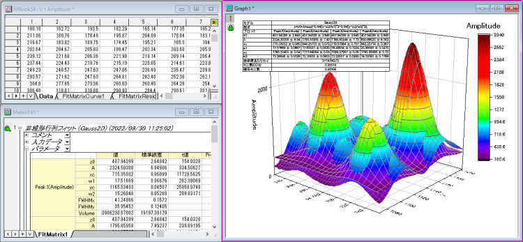

複数ピークによる曲面フィット
SurfaceFit-MultiPeaks
Originには、Surface Fittingカテゴリに複数の曲面フィット関数があり、3Dデータのフィットに対応しています。曲面フィット関数は非線形曲線フィットの関数と似ています。
曲面フィットはOroginProでのみ利用できます。
必要なOriginのバージョン: OriginPro 9.0 SR0以降
学習する項目
- 曲面でフィットを行う方法
- 複数ピークの曲面でフィットを実行する方法
ステップ
このチュートリアルは、Tutorial Data.opj (<Origin EXE Folder>\Samples\Tutorial
Data.opj).にある Surface Fitting (Pro Only) フォルダについて説明します。
- 行列シートをアクティブにし、作図>3D:3Dカラーマップ曲面と選択して、3Dグラフを作図します。
- グラフウィンドウをアクティブにして、解析：フィット：非線形曲面（3D）フィットと選択して、NLFitダイアログを開きます。行列シートから実行する場合は、解析：非線形行列フィットメニューを選択します。
- 関数ドロップダウンリストからGauss2Dを選択します。
- 
- 詳細をクリックし、複製の数 を 3に設定し、ピークの向きを正にします。4つのピークが検索されたのが確認できます。
- 
- フィットをクリックして複数ピークフィットを行います。そしてフィット結果があるレポートワークシートが生成されます。
- 